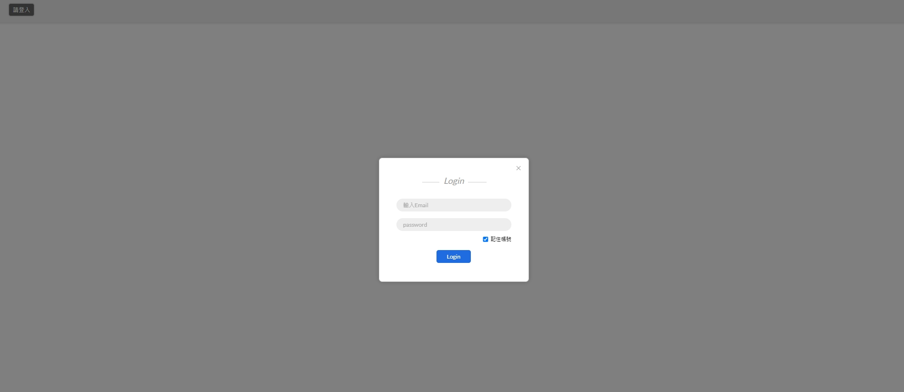
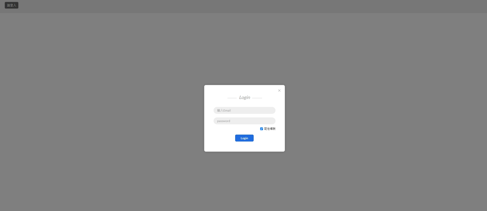

專案
Project
零件規則管理工具
註:公司專案，無demo畫面
此專案後端是使用 Laravel 進行 API的開發，但因為是接手別人的專案，因此大部分都是以原本的結構下去撰寫，只是有加入一些共用的函式來減少重複的步驟。
前端部分是使用 Angular9 搭配 Angular Material 進行開發，而溝通方面 以Zeplin 來與設計師和專案負責人進行溝通。
另外由於會配合其他部門的系統，在專案組員設計完 JSON 的格式後，會邊串接邊討論，如果有需要修改的地方也會大家一同討論後在決定對策。
此系統主要是以設定規則為主，因此會有大量的輸入框及格式設定選單來進行規則的設定。

 

零件狀態與部門人員工作追蹤工具
註:公司專案，無demo畫面
開發此工具是因為零件部門的主管希望可以追蹤部門人員的工作狀況與效率，因此與我討論後開發出了這個小工具。
此工具後端是使用 PHP 及 MySQL 進行 API的開發，而在前端因為考量到需求量可能沒有這麼複雜，沒有使用前端框架而是直接使用原生的 Javascript 搭配相關套件進行開發。
此工具必須要有權限的人員才能登入使用，因此我有建立一個簡易的登入系統，也利用了 Local Storage 製作了記住我的功能。
此工具第一部分是可以檢視目前的零件部門人員身上的工作量，可以判斷出目前該人員手上的工作以及目前分派給他的功作為何。
此工具第二部分是可以檢視目前的零件部門人員整天的工時狀況，利用 d3.js 繪製甘特圖來表示他從開始上班到追蹤當下的時間分配，也可以藉由工時比率來判斷該人員的效率如何。
最後在讓使用者可以去設定部門人員的上班狀態，避免因為不知道人員否休假而在追蹤效率上發生誤判。


此形象官網主要是我參考了許多形象網站所設計，此專案中用到了SCSS，以及單純的CSS 與 HTML 來處理 RWD 相關的設計，會做這個作品也是因為我在目前工作中較少接觸到這種形象官網的開發，因此才會選擇這個作品以利於練習 RWD 的相關開發


此專案開發原因是覺得市面上很多人寫口罩或相關的地圖，但對我來說地圖的實用性沒有那麼高，就想著做一個單純的文字介面，而地圖採用 Google Map 連結方式，覺得整體頁面上比較簡單，也讓年長者使用上較為方便好懂，另外有搭配了定位來判斷目前使用者位置，不過目前遇到的狀況是在使用 WIFI 網路情況下的定位位置會比較不準確，還需要再做優化調整。